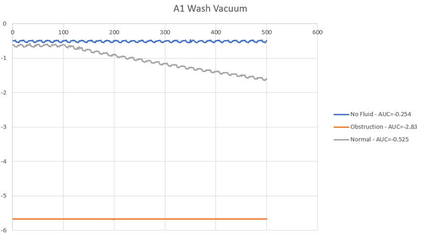

Be sure the wash buffer container contains wash buffer.
Be sure the wash buffer optical sensor is operational and that the DACQ board and all cables are connected. See
Wash Buffer Level Detection for more information.
Analyzing the Related Log Files
Obtain copies of the related Process Monitoring log files from both the
Pass and
Fail folders in
D:\ProgramData\Beckman Coulter\Logs\Falcon Process Monitoring\
In the
Fail folder, use Microsoft Excel to open the newest log file that includes WashWheel in the filename.
Plot column C (pressure trace).
Compare cell AB (AUC) with cells AE and AF (threshold limit)
Dispense (obstruction)
AUC > AE
Dispense (no fluid)
AUC < AF
Select the table of pressure data and insert a line chart into the sheet.
Figure 473: A1 Wash Vacuum

If there is no fluid, the AUC will be relatively steady and close to zero. The A1 wash vacuum trace is normal if the AUC starts at zero and grows increasingly negative. If there is an obstruction, the AUC will be steady and extremely negative.